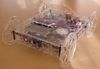
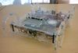
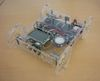
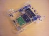
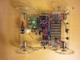
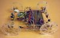
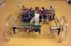
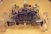
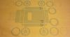

FireFly1 robot
{kind=link}
FireFly1 is WiFi controlled model of exploration vehicle. Body parts and wheels are laser cutted out of 2 mm thick acrylic glass and assembled with M3 screws. Wheels are propelled by 4 DC motors with gearbox. Whole vehicle is powered by 8 AA NiMH batteries. Behind front panel is mounted color camera and floodlight module. Camera image is near-realtime relayed through WiFi to control computer and allows remote driving. Floodlight brightness can be smoothly adjusted. Environment sensor package consists of DHT22 temperature & humidity sensor and MQ-9 flamable gas sensor. In rear panel is mounted 10 mm RGB LED module after which robot was named. Control computer consists of Raspberry Pi and Arduino MEGA. Electronics is wired according to scheme below. Control interface is written as web page with JavaScript. Sensor equipment consists of: Color camera + floodlight module
Gallery
|  |  |  |  |
|  |  |  |  |
|  | 100px | 100px | 100px |
| 100px | 100px | 100px | 100px |
{kind=link}
{kind=link}
{kind=link}
{kind=link}
{kind=link}
{kind=link}
{kind=link}
{kind=link}
{kind=link}
Timeline
| 1 | 2 | 3 | 4 | 5 |
| 1 | 2 | 3 | 4 | 5 |
Total xxx hours of free time snail speed work.
Suppliers
Electronics were bought on E-bay and GM Electronic. There is a list of verified e-bay supplyers
Budget
| USD | CZK | Parts |
|---|---|---|
| x | x | laser cutted acrylic body and wheels ( 2mm thick acrylic glass) |
| x | x | motors |
| x | x | electronics (Raspberry Pi, Wi-Fi dongle, Arduino MEGA, L293 motor drivers, 9-DOF IMU, DHT22 temperature and humidity sensor, MQ gas sensor) |
| 0 | 0 | software (open source, Raspbian, Python Idle, MJPEG streamer, custom JavaScript WebSocket based control interface) |
| x | x | total |
Termination
Project was terminated due to multiple design flaws such as weak motors, fragile acrylic body and video transmission delay. Resources were moved to next version
Events participation
Robot Challenge 2015 Robotic day 2015 Caffe Neu Romance 2015